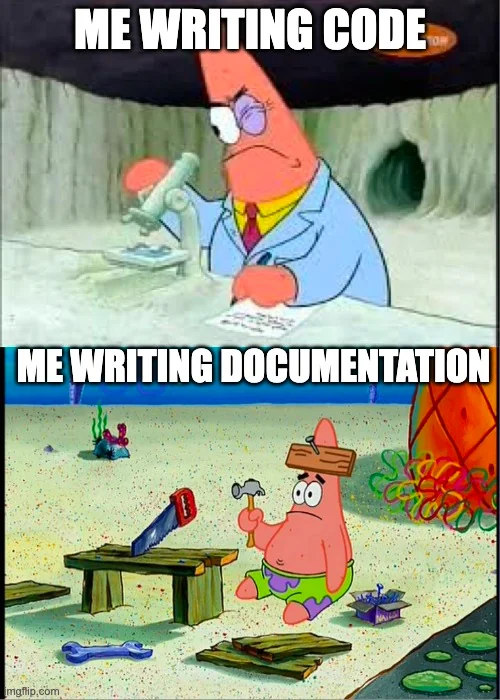

Functions and Modules#
Functions#
We briefly talked about functions and modules before. We can create a basic function that takes any number and adds the value 2 to it.
def plus_two(number):
return number + 2
plus_two(12110)
Lets talk about the anatomy of a function:
def is the key word you want to use to define a new function.
You leave one space between def and your Function Name (plus_two, in the example).
After the Function Name you put a Parenthese (). In that Parenthese you define the arguments you want your function to take.
In the example, we name that argument number. So what our function does, is take the argument number and adds +2 to it. The argument alone does NOT specify the datatype(!). You could also do something like
plus_two("Hello").
But this will give you an error, since strings and numbers cannot be added.
Most importantly, we add the keyword return to the function. Return is CRUCIAL if we actually want to extract an output from our function. Without the return keyword in our function, something like:
MyNewNumber = plus_two(0)
would return nothing.
Functions are a key tool to use in your programming scripts. It allows you to speed up your programming, make your scripts more clearer and communicate them better to your fellows (if applied properly).
Now, when should you actually create and use your own function? It makes sense to use functions when you repeat the same operation multiple times in your scripts. This way, you act accordingly to the DRY (Dont Repeat Yourself) principle.
Lets imagine, you want to show off your freshly acquired programming skills to your fellow friends, families or pets.
You tell them about how you learned about if/else statements and how you can use your own scripts, to take any list and calculate the length of that list. For some reasons, you want to only accept lists that do not exceed the length of 5. You also want to print out a text message, if the length of a list is greater than 5.
List1 = [0,1,2,3,4]
List2 = [5,6,7,8,9,10]
List3 = ["This","Is","A","List",5,6,7]
if len(List1) > 5:
print("Too long!")
else:
print("Not too long!")
if len(List2) > 5:
print("Too long!")
else:
print("Not too long!")
if len(List3) > 5:
print("Too long!")
else:
print("Not too long!")
Not too long!
Too long!
Too long!
Eventhough this scripts of course works, you may get the impression already, that its a bit crowed and hard to read. Making your code easy to read is a major challenge in programming!
Though the comparison you apply here is not extremly complicated, it can happen quite fast that you do multiple, complex operations in multiple cells and your notebook gets really long and crowdy. This is where you should use functions. They clear up your notebook and can make things easier to read and understand.
Your goal should be to make your code understandable for others and for yourself (!) in the future.
def CompareLength(List,max_length):
if len(List) > max_length:
print("Too long!")
else:
print("Not too long!")
CompareLength(List1,5)
Not too long!
Exercise 10.0: Think!#
Take a look at the function CompareLength. What is missing here? Why it still working?
Type your Answer
Exercise 11.0#
And if we want too, we can make things now way cleaner and combine our knowledge of for loops with our newly created functions.
Fill in the gaps below. The loop should iterate through each list in combined_list and apply the CompareLength function.
Try to manipulate the max_length argument, so it compares the list length against a different number.
#Step1: Create a "list of lists"
combined_list = [List1,List2,List3]
#Step2: Loop through each list stored in combined_list and apply CompareLength here....
for ... in ...:
raise Exception("Solution Missing")
Well done!
Now while all of this is very important, we violated one of the most important principles (I wrote this three times now, maybe I should plug this into a function) so far, the holy grail of programming across languages, the tool that helps us maintain and transfer knowledge across generations and yada yada.
You might have guessed already, I am talking about documentation

Documenting your code in a proper way is really really important. If you dont add documentation to your code, you will very likely forget what you tried to do and others that will look at your code will have no idea what you have done.
This is unfortunately very common, but its a fallacy that is easy to fix.
Lets start with adding some documentation to our function CompareLength. For our Python functions, we can add something called DocString.
What does a DocString do? Why should we care? Lets think of a scenario. Your colleague sends you his new fancy function he designed to facilitate your experiment workflow. You import the function from a .py file, and then try to run it. Lets say, you get an RunTime Error back. Your first impuls is to see, if you maybe put the wrong arguments to your colleagues function. In Python, you can do something super cool and inspect all the important information of your function by typing
*YourFunction?*
in your code cell. Try that with our CompareLength Function.
Exercise 12.0#
Obviously, we dont get too much information here, because there is not DocString yet. So lets change that and add a Document String!
def CompareLength(List,max_length):
'''
Type your document string here. Try to very briefly describe, what your function actually does.
Dont forget to add information about our arguments(keywords) that our function takes.
People should know what to expect from your function, just based on the doc string
List = ...
Max_length = ...
'''
if len(List) > max_length:
print("Too long!")
else:
print("Not too long!")
That is already better, is it not? Now we can confidently share this function with our peers and they will still get an idea of what we actually did in our function.
Exercise 13.0#
Try now to add some documentation to the for loop we defined earlier in Exercise 11.0.
Within Code cells, you usually want to use # to document your code. This enables you to write text without worrying about Syntax Errors coming your way.
You usually want to very briefly explain, what your code cell actually does.
#Your brief description of what this cell actually does
for ... in ...:
...
Exercise 14.0#
Lets finish this section with one last task. Try to create your very own function (call it age_categorization), that takes the age as its input and returns a brief categorization decision (I.e, does the age belong rather to a young person or to a older person). Hint: If/Else clauses come in handy here.
The way you define young and old does not matter at all. What matters is, that your functions returns this categorization. The output (returned value) should be a string, where as the input should be an integer.
Add a doc string to your function.
If you have troubles with the task, try to treat it like a cooking recipe:
List down the equipment (for example, how you name your function, and what the arguments are), the ingredients (for example, the input), what you should do with these ingredients (for example, what is happening inside your function) and what the end-product should look like (the output).
Bonus:#
What would you do to make sure, that your function only works if the age input is an integer? Do you have an idea, how you could penalize someone that tries to use a float value (e.g., 23.2) to the function?
Bonus#
The way the age_categorization function is now set up, it only takes a single values.
Using this list:
Ages = [15, 22, 75, 60, 45]
loop through each of these age values and apply the categorization function here.
If this is too easy for you:#
Modify the function, so it no longer takes an integer as its input, but only a list. Implement a loop within your function, so it loops through this list and applies the categorization. Create two new lists called young and old. Append the categorized values to the respective list (young age should be appended to list called young and vice versa).
Do no longer return a string but return these two lists.
Evaluate your function based on the Ages list.
Ages = [15, 22, 75, 60, 45]
Bonus:#
Define a function called calculation. The function should take two arguments (two integers). Return both the product (muliplication) and the sum of these two integers
def calculation(a,b):
raise Exception("Solution Missing")
Bonus:#
Define a function called count_evens. The function should take a list as its input, and return the number of even elements in that list. Use any of the lists you defined earlier to test this function.
Hint: You can use the modulo operator % here. 5 % 2 == 0, 4 % 2 == 0.
def count_evens(list):
raise Exception("Solution Missing")

Packages, Modules and libraries#
Okay okay, you might be wondering, why is python the most popular programming language if you need to write all these functions yourself? Well, truth is, most of the time you dont have to. The beauty of python is something we call Packages. Just for your information: Packages are often used interchangable with the term Library.
Now what is a package? It is a collection of modules that contain related bits of code, e.g. classes and functions.
Lets break this down:
We already heard about the NumPy package. Numpy is a huge python project, that has multiple modules to its name. Modules are basically organization tools, in which you can store corresponding and related classes and functions. Technical background information: Modules are usually stored in a .py file (so not in a notebook (.ipynb) file like we are using right now). For example, there is the Numpy.polynomial module, that has several functions to manipulate polynomials. Classes are handy for organizing behavior (functions) within a module
So we have Packages that have modules and these modules have classes which finally have functions we can call.
📦 Package: cookbook
├── 📂 Module: italian_receipes
│ ├── 🏛️ Class: SauceMaker
│ │ ├── 🔧 Function: prepare_ingredients()
│ │ ├── 🔧 Function: cook()
📦 Package: sklearn
├── 📂 Module: linear_model
│ ├── 🏛️ Class: LogisticRegression
│ │ ├── 🔧 Function: fit()
│ │ ├── 🔧 Function: predict()
Python packages can make our life extremly easy.
Lets say, you have a list with different values :
MyList = [0,1,3,5,6,7,2,6,8,2,7,9]
You now want to take the average of that list. You can approach this from different angles. Since we know, that the average of a list is just the sum of its elements divided by the number of elements in that list, we can say
sum(MyList) / len(MyList)
or we can put this into a function
def Mean(list):
return(sum(list)/len(list))
But we dont really want to do that every time we create a new project, do we? Thats where python packages come in handy! For example, there is the numpy.mean function we can simply call here, that takes care of our problem.
Now, how do we use these modules? You can simply type
import numpy
in a code cell. A very common behavior is to abbreviate numpy like this:
import numpy as np
You can put any thing you like instead of “np”, but “np” is extremly common and all other abbreviations will probably be very very confusing. So dont do that.
Exercise 14.0#
Import numpy as np below and calculate the mean of the Lists we defined.
Hint: If you are unsure about which arguments to pass to the function, you can use np.mean? to get more information (i.e, the Docstring)
So hopefully, you now have rough idea of what modules actually are. Remember: If you need to solve a problem and do not know, which module or function you should use, simply google it (“How to calculate the mean of a list in python”, “how to get the standard deviation of a list in python”…) It is near impossible to list all possible functions and modules in any course, and remembering all of them is just very tedious and unnecessary